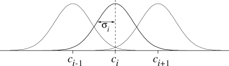
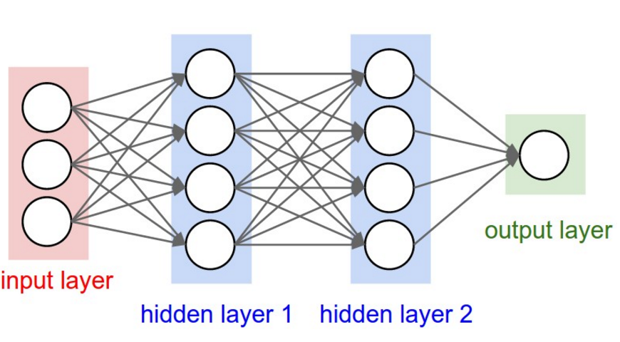
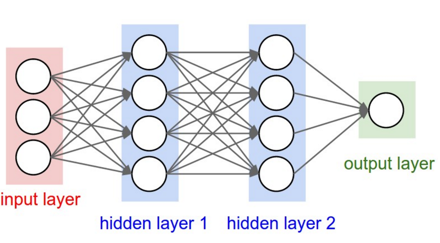

Deep Learning: An overview
Ahmed Touati
Data Scientist @ AXA Data Innovation Lab

Plan
- Why deep learning? history and motivation
- Learning algorithm and regularization
- Computer vision: convolutional neural network
- Natural language processing: recurrent neural network
Perceptron: first trained machine
- First learning machine build at Cornell in 1960
- The perceptron was a linear classifier on top of a simple features extractor
- $y = \text{sign}(\sum_{i=1}^Nw_iF_i(x)+b)$


Limitation of linear classifier
- Cover theorem 1966: Let $\{x_1, x_2...x_P\}$ be vector in $\mathbb{R}^N$, the number of distinct dichotomies that can be realized by a plane is: $C(N, P) = 2\sum_{k=0}^{N-1}(_{k}^{P-1})$

- A complex pattern-classification problem, cast in a high-dimensional space nonlinearly, is more likely to be linearly separable than in a low-dimensional space.
Idea: Basis Function
- $f(x, w) = \sum_{i=1}^mw_ih_i(x)$
- Basis function may be sample-centered (kernels) or centered in areas of high sample density (using an unsupervised clustering algorithm)
- An interesting type of basis function is $\sigma(U^{T}x) = \frac{1}{1+\exp(-U^{T}x)}$ (single hidden layer neural network)



- Universal approximation theorem (Cybenko 1989): Let $\phi$ be bounded and monotonically-increasing continuous function. The space of function the form $$ f(x) = \sum_{i=1}^Nv_i\phi_i(w_i^Tx + b_i), N \in \mathbb{I}, v_i, b_i \in \mathbb{R}, w_i \in \mathbb{R}^m$$ are dense in the space of continuous function on $[0, 1]^m$
- Theoritician's dilemma: We can approximate any function as close as we want with shallow architecture. Why we need deep ones?
- N-bit parity: requires N-1 XOR gates in a tree of $\log(N)$ where it requires an exponential gates if we restrict ourselves to 2 layers.


Multilayer perceptron
Neural network with L hidden layers
- layer pre-activation for $k>0$ ($h^{(0)}(x)=x$): $$ a^{(k)}(x) = b^{(k)} + W^{(k)}h^{(k-1)}(x)$$
- hidden layer activation ($k \in \{1,..L\}$): $$ h^{(k)}(x) = g(a^{(k)}(x))$$
- output layer activation (k=L+1): $$ h^{(L+1)}(x) = o(a^{(L+1)}(x)) = f(x)$$

Biological inspiration
 

Activation function
- sigmoid function: $g(x) = \frac{1}{1+\exp(-x)}$
- Tanh function: $g(x) = \tanh(x) = \frac{\exp(x)-\exp(-x)}{\exp(x)+\exp(-x)}$
- ReLu (rectified linear unit)function: $g(x) = max(x, 0)$


Gradient descent algorithm
- initialize $\theta, (\theta = \{W^{(1)}, b^{(1)},.. W^{(L+1)}, b^{(L+1)}\} )$
- for N iterations:
- for each example $(x^{(t)}, y^{(t)})$ $$ \delta = - \nabla_{\theta}l(f(x^{(t)}; \theta), y^{(t)})$$ $$ \theta = \theta + \eta \delta $$
- For classification, the loss function is the negative log-likelihood $f(x)_c = p(y=c|x)$ (sometimes referred to as cross-entropy): $$l(f(x), y) = - \sum_c 1_{(y=c)}\log f(x)_c = - \log f(x)_y $$
Gradient computation
Loss gradient at output pre_activation:
- Partial derivative: $$\frac{\partial}{\partial a^{(L+1)}(x)_c}- \log f(x)_y$$ $$= - (1_{(y=c)} - f(x)_c)$$
- Gradient: $$\nabla_{a^{(L+1)}(x)_c} (-\log f(x)_y)$$ $$= - (e(y) - f(x))$$

Gradient computation
Chain rule
- if a function p(a) can be written as a function of intermediate results $q_i(a)$ then we have: $$ \frac{\partial p(a)}{\partial a} = \sum_i \frac{\partial p(a)}{\partial q_i(a)} \frac{\partial q_i(a)}{\partial a} $$

Gradient computation
Loss gradient at hidden layers: let's apply chain rule- Partial derivative: $$ \frac{\partial}{\partial h^{(k)}(x)_j} -\log f(x)_y = \sum_i \frac{\partial - \log f(x)_y}{\partial a^{(k+1)}(x)_i} \frac{\partial a^{(k+1)}(x)_i}{\partial h^{(k)}(x)_j}$$
- Gradient: $$\nabla_{h^{(k)}(x)} - \log f(x)_y = (W^{(k+1)})^T (\nabla_{a^{(k+1)}(x)} - \log f(x)_y)$$
Gradient computation
Loss gradient at hidden layers pre-activation
Partial derivative:
\begin{align}
&\frac{\partial}{\partial a^{(k)}(x)_j} - \log f(x)_y\\
&= \frac{\partial - \log f(x)_y}{\partial h^{(k)}(x)_j}
\frac{\partial h^{(k)}(x)_j}{\partial a^{(k)}(x)_j}\\
&= \frac{\partial - \log f(x)_y}{\partial h^{(k)}(x)_j} g'(a^{(k)}(x)_j)
\end{align}
Gradient:
$$\nabla_{a^{(k)}} - \log f(x)_y = (\nabla_{h^{(k)}(x)}-\log f(x)_y) . [..g'(a^{(k)}(x)_j..]$$

Gradient computation
Loss gradient at parameters- Partial derivative: $$\frac{\partial}{\partial W^{(k)}_{i,j}} - \log f(x)_y = \frac{\partial - \log f(x)_y}{\partial a^{(k)}(x)_i} \frac{\partial a^{(k)}(x)_i}{\partial W^{(k)}_{i,j}}$$ $$\frac{\partial}{\partial b^{(k)}_{i}} - \log f(x)_y = \frac{\partial - \log f(x)_y}{\partial a^{(k)}(x)_i} \frac{\partial a^{(k)}(x)_i}{\partial b^{(k)}_i}$$
- Gradient: $$\nabla_{W^{(k)}}-\log f(x)_y = (\nabla_{a^{(k)}}-\log f(x)_y)h_{(k-1)}(x)^T$$ $$\nabla_{b^{(k)}}-\log f(x)_y = \nabla_{a^{(k)}}-\log f(x)_y$$
Backpropagation algorithm
- compute output gradient $$\nabla_{a^{(L+1)}(x)_c} (-\log f(x)_y) = - (e(y) - f(x))$$
- for k from L+1 to 1:
- compute gradient of hidden layer parameter: $$\nabla_{W^{(k)}}-\log f(x)_y = (\nabla_{a^{(k)}}-\log f(x)_y)h_{(k-1)}(x)^T$$ $$\nabla_{b^{(k)}}-\log f(x)_y = \nabla_{a^{(k)}}-\log f(x)_y$$
- compute gradient of hidden layer below: $$\nabla_{h^{(k-1)}(x)} - \log f(x)_y = (W^{(k)})^T \nabla_{a^{(k)}(x)} - \log f(x)_y$$ \begin{align} \nabla_{a^{(k-1)}} - \log f(x)_y &= (\nabla_{h^{(k-1)}(x)}-\log f(x)_y) \\ &. [..g'(a^{(k-1)}(x)_j..] \end{align}
Gradient descent
- Batch gradient descent: we look at all the examples at the same time. It is not efficient when we have a massive dataset
- Stochastic gradient descent: use one random example. It avoids the whole data summations
- Mini-batch gradient descent: could be even more faster, it uses m examples in each iteration


Gradient descent
- We recall the gradient descent update: $x_{t+1} = x_t + \delta_t, \text{where } \delta_t = -\eta g_t$
- Momentum: accelerates progress along dimensions in which gradient consistently point in the same direction and to slow progress along dimensions where the sign of the gradient continues to change. $$ \delta_t = \rho \delta_{t-1} - \eta g_t$$
- Adagrad: large gradients have smaller learning rates and small gradients have large learning rates: $$ \delta_t = \frac{\eta}{\sqrt{\sum_{\tau=1}^t g_{\tau}^2}g_t}$$
- Other approches: Adam, AdaDelta and RMSProp
Regularization: Dropout
A Simple Way to Prevent Neural Networks from Overfitting

Computer vision
Classification task example:


challenges:

- View point variation
- Scale variation
- Illumination conditions
- Deformation
- ...

Traditional approaches
Maually designed features are often over-specified, incomplete and take a long time to design and validate. Example of descriptor: Scale-Invariant Feature Transform and vector quantization
Example of descriptor: Scale-Invariant Feature Transform and vector quantization

End to end training


Convolutional neural network (Convnet) layers
- Input layer: holds the raw pixel values of the image. 3 dimensions: width, height, and depth (color channels).
- Convolutional layer: computes the output of neurons that are connected to local regions in the input, each computing a dot product between their weights and the region they are connected to in the input volume.
- ReLu layer: applies an elementwise activation function.
- Pooling layer: performs a downsampling operation along the spatial dimensions (width, height).
- Fully connected layer: computes the class scores

Convolution

Convolution

ImageNet challenge
14 million images gathered from internet and labeled via Amazon Truk, 20k classes.
ImageNet challenge
- Winner: SuperVision team: Alex Krizhevsky,Ilya Sutskever,Geoffrey Hinton, University of Toronto.
- Next best model is not convnet

AlexNet architecture
- 7 layers, 650 000 neurons, 60 000 000 parameters
- Trained on 2 GPUs in two weeks
- Dropout with 0.5 probability
- In order to avoid overfitting, they trained on 224x224 patches extracted randomly from 256x256 images, and also their horizontal reflections

Convnet visualizing
- Use deconvolution to map activations at higher layers back to in the input
- same operations as Convnet but in reverse:
- Unpool features maps
- Rectify unpooled maps with the same non-linearity
- Convolve rectified unpooled maps with transposed learned filters

Convnet visualizing
- For a given feature map, we show the top 9 activations. Projecting each separately down to pixel space reveals the different structures that excite a given feature map.
- Alongside these visualizations we show the corresponding image patches.

Convnet visualizing

Deep learning in natural language processing
- Goal: for computers to process or "understand" natural language in order to perform tasks that are useful.
- Applications range from simple to complex:
- Spell checking, keyword search, finding synonyms
- Extracting information from websites such as product price, dates,..
- Classifying, reading level of school texts, positive/negative sentiment.
- Machine translation
- Question Answering
Vector Representations of Words
- Image and audio processing system high-dimensional datasets encoded as vectors of the individual pixel-intensities or power spectral density coefficients
- Natural language processing systems traditionally treat words as discrete atomic symbols
- Every word is orthogonal to one another
- $w_{mother}. w_{father} = 0$

Word embedding
- The Distributional Hypothesis in linguistics: words that are used and occur in the same contexts tend to purport similar meanings
- Word embedding represent words in a contiuous vector space where semantically similar words are mapped to nearby points.

Word embedding
Count based methods
- We compute the statistics of how some words co-occurs with its neighbor words in a large text corpus.
- Then we map these count-statistics down to a small, dense vector for each word.

Word embedding
Predictive Method: Word2vec (Mikolov, 2013)
- Continuous Bag Of Word (CBOW) architecture predicts the current word based on the context.
- Skip-gram predicts surrounding words given the current word.
- Skip-gram treats each context-target pair as a new observation while CBOW smoothes over a lot of the distributional information

Skip-gram
- Let's $W$ be embedding matrix and $W'$ the output weight matrix
- Let w a word is hot-one encoded by x such as $x_k=1, x_k=0 \text{ for } k' \neq k$, then, the hidden layer $$h = x^TW = W_{(k,.)} = v_w$$
- If $v'_{w_j}$ is the j-th column of the matrix $W'$, the output pre-activation is: $$ u_j= (v'_{w_j})^T h$$

- The probability of a context word $w_t$ (target) given the context's center $w_c$ is: \begin{align} P(w_t| w_c) &= \text{softmax}(u_t) \\ &= \frac{\exp((v'_{w_t})^Tv_{w_c})}{\sum_{\text{word w in Vocab}} \exp((v'_{w})^Tv_{w_c})} \end{align}
- The negative log-likelihood to minimize (very expensive to compute): \begin{align} -\log P(w_t| w_c) &= - (v'_{w_t})^Tv_w \\ &+ \log\big(\sum_{\text{word w in Vocab}} \exp((v'_{w})^Tv_{w_c})\big) \end{align}
- Negative sampling: word2vec is instead trained using a binary classification objective: \begin{align} loss_{neg} &= -\log P(D=1| v'_{w_t} v_{w_c}) \\ &- k\mathbb{E}_{w \sim P_{noise}}\log P(D=0|v'_{w}, v_{w_c}) \end{align}
Linguistic regularities in the word space
| Expression | Nearest token |
|---|---|
| Paris - France + Italy | Rome |
| bigger - big + cold | colder |
| sushi - Japan + Germany | bratwurst |
| Windows - Microsoft + Google | Android |

Baroni et al., “Don’t count, predict! A systematic comparision of context-counting vs. context-predicting semantic vectors”, ACL 2014
Language Model
- A language model computes a probability for a sequence of words: $p(w_1,...,w_T)$
- Useful for machine translation
- Word ordering: p(the cat is small) > p(small the cat is)
- Word choice: p(walking home after school) > p(walking house after school)
Traditional language model
- Probability is usually condi3oned on window of n previous words: Markov assumption: \begin{align} &p(w_1,...,w_T) = p(w_1)\prod_{i=1}^m p(w_i|w_1,...,w_{i-1}) \\ & \simeq p(w_1)\prod_{i=1}^m p(w_i|w_{i-(n-1)},...,w_{i-1}) \end{align}
- Estimate probability by counting: $p(w_2|w_1) = \frac{\text{count}(w_1, w_2)}{\text{count}(w_1)}$ $$p(w_3| w_2, w_1) = \frac{\text{count}(w_1, w_2. w_3)}{\text{count}(w_1, w_2)}$$
Recurrent neural network
- Given list of word vectors: $x_1, x_2,...,x_T$
- $h_t = \text{sigmoid}(W^{(hh)} h_{t-1} + W^{(hx)}xt)$
- $y_t = \text{softmax}(W^{(yh)} h_t) $

RNN training
- Let's take a simpler RNN $$h_t = Wf(h_{t-1}) + W^{(hx)}x_t$$ $$y_t = W^{(yh)}f(h_t)$$
- Total error is the sum of each error at time steps t: $$\frac{\partial E}{\partial W} = \sum_{t=1}^T\frac{\partial E_t}{\partial W}$$
- Let's apply Chain rule: $\frac{\partial E_t}{\partial W} = \sum_{k=1}^t \frac{\partial E_t}{\partial y_t} \frac{\partial y_t}{\partial h_t} \frac{\partial h_t}{\partial h_k} \frac{\partial h_k}{\partial W}$
RNN training
- $\frac{\partial h_t}{\partial h_k} = \prod_{i=k+1}^{t} \frac{\partial h_i}{\partial h_{i-1}}$
- $\text{As } h_i = Wf(h_{i-1}) + W^{(hx)}x_i$, $$\frac{\partial h_i}{\partial h_{i-1}} = W^T\text{diag}(f'(h_{i-1}))$$
- As $f'$ is bounded, $||\frac{\partial h_i}{\partial h_{i-1}}|| \leq \|W\| \| \text{diag}(f'(h_{i-1})\| \leq \beta$
- $\|\frac{\partial h_t}{\partial h_k}\| \leq \prod_{i=k+1}^{t} ||\frac{\partial h_i}{\partial h_{i-1}}|| \leq \beta^{(t-k)}$
- This can become very high or very small => Vanishing or exploding gradient
Trick for exploding gradient: clipping trick

Long Short Term Memory network


forget gate

input gate

Memory cell

output gate

RNN results

"Extensions of recurrent neural network language model" by Mikolov and al 2011
KN5 refers to Count-based language model with Kneser-Ney smoothing and 5-grams
CONCLUSION
- Deep learning provides a flexible «almost» universal learnable framework for representing world, visual and linguistic information.
- It is very hard to train and a lot of hyperparameters to tuned.
- It is as much about theory as about engineering.